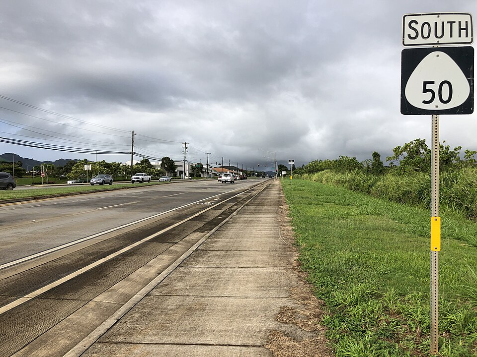

Kaumualiʻi Highway
Place: Kaumualiʻi Highway (Route 50), Kauaʻi
Type: State highway / historic transportation corridor
Story it tells: Kauaʻi's primary westbound highway honors the island's last independent king while following a route that links many of the places central to his life, diplomacy, and enduring legacy.

Kaumualiʻi Highway, designated as Hawaiʻi Route 50, is the primary road connecting Līhuʻe with Kauaʻi's West Side. Stretching roughly 35 miles to Mānā, the highway follows a corridor that evolved from plantation-era wagon roads into the modern roadway that now serves nearly every community along the island's southern coast. More than simply a transportation route, its name preserves the memory of King Kaumualiʻi, the last independent ruler of Kauaʻi and Niʻihau.
The highway was officially named in 1955, replacing the more utilitarian names used during the territorial era, including the "Kauaʻi Belt Road" and "Government Road." Community leaders and Native Hawaiian organizations argued that major public roads should honor the people and history of the islands rather than erase them beneath generic infrastructure. By choosing Kaumualiʻi's name, the territorial government acknowledged the ruler whose diplomacy shaped Kauaʻi's place in Hawaiian history.
Born at sacred Wailua on Kauaʻi's east side, Kaumualiʻi ruled from the west, establishing his royal center at Pāʻulaʻula near Waimea. The highway effectively traces the geography of his life, covering mauch of the lands he governed, traded with visiting ships, and defended his kingdom. In 1810, after two failed invasion attempts by Kamehameha I, Kaumualiʻi negotiated a peaceful agreement that allowed Kauaʻi to retain its own ruler while recognizing Kamehameha's authority, sparing the island from the devastating warfare that had affected much of the archipelago.
The roadway itself reflects Kauaʻi's changing past. Plantation roads first emerged during the late nineteenth century to move sugarcane across the island. In 1911, construction of the Hanapēpē River Bridge introduced Hawaiʻi's first reinforced concrete tee-beam bridge, allowing heavier traffic to cross safely. During the 1930s the corridor became part of the federally funded Kauaʻi Belt Road, and during World War II it was widened and extended westward to improve access to Barking Sands and other military facilities.
Traveling the highway today also reveals many places tied to Kaumualiʻi's legacy. Near Waimea, the road passes Pāʻulaʻula, historically known as Russian Fort Elizabeth, where the king briefly allied with the Russian-American Company in an effort to strengthen Kauaʻi's independence. Elsewhere, the route crosses fertile plantation lands, historic towns including Hanapēpē and Waimea, and stretches of coastline that once served as important centers of trade, agriculture, and governance during Kaumualiʻi's reign.
Beyond its historical significance, Kaumualiʻi Highway remains vital to everyday life on Kauaʻi. Residents rely on it to connect communities across the island, while visitors follow it toward Waimea Canyon, Polihale, and the beaches of the west coast. Along portions of the route near Līhuʻe, transportation officials also work to protect the endangered nēnē, whose attraction to the highway's grassy shoulders has made wildlife conservation an ongoing challenge.
Today, Kaumualiʻi Highway stands as a reminder that roads preserve memory, carrying the name of a ruler remembered not for conquest, but for diplomacy, resilience, and the peaceful preservation of his island kingdom.